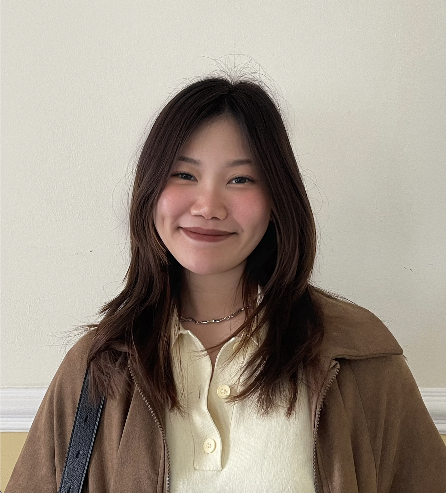

THE DESIGNER
Typography, layout, branding and visual communication.
03 / THE PERSON BEHIND THE WORK

I’m a graphic designer with a love for visual storytelling, typography, composition and creative experimentation.
I'm expanding my practice into Interactive Digital Media, UX/UI and frontend development. I enjoy bringing together strong visual ideas and useful digital experiences.
Currently studying in Dublin, I’m learning through research, prototyping and making things with HTML, CSS and JavaScript.
EXPLORE MY WORKTypography, layout, branding and visual communication.
Research, UX, interaction design and problem-solving.
Frontend, motion, creative coding and experimentation.